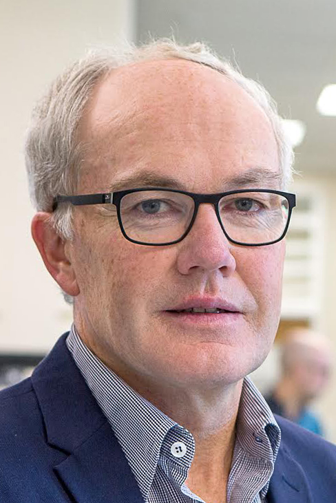

Prof. Antje Blumenthal
Frazer Institute
Centre for
Superbug Solutions
Scientific exchange, collaboration and innovation in antimicrobial resistance research.
Monday
30 November 2026
Customs House
399 Queen St, Brisbane City QLD 4000
About
The Centre for Superbug Solutions (CSS) Symposium 2026 will bring together researchers, clinicians and collaborators for a day of scientific exchange, collaboration and innovation in antimicrobial resistance (AMR) research.
The programme combines keynote presentations, EMCR talks, flash talks and networking opportunities to share discoveries, connect across disciplines and build new collaborations.
Keynote speakers
Frazer Institute
UTS

University of Otago
Keynote speakers
Explore each keynote speaker’s biography, presentation title and talk abstract. The editable placeholders below can be replaced as speaker information is confirmed.
Frazer Institute
Session 1 · 9:00 AMAdd Professor Antje Blumenthal’s biography here. This area is designed for a concise 100–200 word speaker profile covering current role, research focus, major contributions and relevant achievements.
Talk title to be announced
Add the keynote abstract here. This space comfortably supports a short conference abstract and will expand automatically if you add more text.
University of Technology Sydney (UTS)
Session 2 · 11:15 AMAdd Professor Steven Djordjevic’s biography here. Include his current position, principal research themes, significant contributions and other details you would like symposium attendees to know.
Talk title to be announced
Add the keynote abstract here. Replace this placeholder with the final abstract supplied by the speaker.
University of Otago
Session 3 · 1:45 PMGreg Cook is a global leader in microbial metabolism and energetics, turning discovery into new weapons against antimicrobial resistance (AMR). Using Mycobacterium tuberculosis as a model, he pioneered drugs that disrupt respiration and ATP synthesis. An inaugural Sesquicentennial Distinguished Professor, he led Otago’s Department of Microbiology and Immunology and held senior roles at Queensland University of Technology. He has published more than 300 papers, mentored over 100 postgraduate students, and led major national and international programmes. A Fellow of the Royal Society of New Zealand and recipient of Otago’s Distinguished Research Medal, he has attracted substantial industry investment to advance new technologies for combatting AMR. Greg is currently the Deputy Vice-Chancellor, Research & Innovation at the University of Otago.
Exploiting Hidden Redox and Metabolic Vulnerabilities in Drug-Resistant Tuberculosis
Drug-resistant tuberculosis remains a major global health challenge; however, resistance mutations can disrupt essential cellular processes and expose previously unrecognised bacterial vulnerabilities. We combined genetic screening, phenotypic growth assays, and metabolomic profiling to determine how drug resistance remodels the physiology and metabolism of Mycobacterium tuberculosis under host-relevant conditions. The fitness costs associated with resistance varied according to the available carbon source, while genetically unrelated resistance mutations produced convergent phenotypes and metabolic dysregulation affecting nutrient utilisation, energy generation, and protein synthesis. Bedaquiline- and rifampicin-resistant mutants exhibited impaired growth on host-relevant carbon sources and condition-dependent collateral susceptibility to antibiotics. Rifampicin-resistant mutants were particularly vulnerable to perturbations in sulphur metabolism and redox homeostasis. Collectively, these findings demonstrate that drug resistance constrains the metabolic adaptation of M. tuberculosis within the host. Therapeutically exploiting these liabilities may enable the development of more effective treatment strategies and regimens for drug-resistant tuberculosis.
Programme
Register & submit
Join the CSS community at Customs House for a full day of antimicrobial resistance research, discussion and connection.